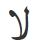
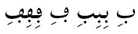

Lateef - Frequently Asked Questions
Many questions can be answered by consulting the following FAQ pages. Here are a few sample questions answered in each FAQ:
- SIL fonts in general
- How can I type...?
- How can I use font features?
- Will you add support for character...?
- Will you add support for script...?
- WIll you help me...?
- The SIL Open Font License (OFL-FAQ)
- Can I use this font for...?
- Can I modify the font and then include it in...
- If I use the font on a web page do I have to include an acknowledgement?
- The full OFL-FAQ.txt is also included in the font package.
A generic FAQ for all of our Arabic scripts fonts can be found here: Arabic Fonts - FAQ. FAQ's specific to Lateef are found below.
Problems with Bold weights
Why does my application not show the Bold weight in font menus and dialogs?
Some applications will list all the weights but leave out Bold. To access the Bold you need to choose Regular and turn on Bold using the application's UI controls such as a "B" button.
Why do I sometimes get a fake Bold?
If you choose a weight other than Regular (such as ExtraLight), then use application controls to turn on Bold, some applications will make a "fake" Bold rather than use one of the real ones in the font (Medium, SemiBold, Bold, ExtraBold). This is because only Regular has an associated Bold counterpart. This is a technical limitation with some apps and OSes. If you are using some other weight than Regular for text and want to make a word or phrase stand out you will need to select the text and apply one of the heavier weights manually.
I understand there is kerning for the Arabic proportional digits. However, it is not working.
The Arabic digits are proportional by default and Lateef includes kerning to improve the spacing of certain pairs of digits such as ٧٨. However there are some applications, including Microsoft Word for Windows, that process the digit kerning information incorrectly, actually making some digits too far apart and some too close together.
If you see incorrect digit kerning in applications other than Microsoft Word, please do let us know.
In the mean time there are two workarounds to consider: - Switch to Tabular digits (in the Advanced Font dialog) - We have added a special Typetuner feature that can be used create a version of the Lateef fonts in which the digit kerning is disabled. When using those fonts in Microsoft Word the resulting digit spacing will be much nicer than Tabular, but not quite as good as it would be if the application's kerning worked correctly.
To obtain Lateef fonts with digit kerning disabled: - Go to TypeTuner Web - Select the Lateef font and click "Select Features" - Find the feature named "Disable digit kerning (see FAQ)" and set it to "True" - If desired, fill in the "Font name suffix" field - Click "Get tuned font" to download a package of Lateef fonts with the digit kerning disabled for use in Microsoft Word. - Unpack the resulting zip and install the fonts it contains.
What are the differences between the Lateef and LateefGR fonts?
The most obvious difference is that Lateef only provides OpenType support and LateefGR only provides Graphite support. For a complete list of the differences between Lateef version 1.001 and LateefGR, you can read the Release 1.200 announcement.
This version of Lateef is an OpenType font that includes all the kerning support that is currently only found in LateefGR. It also includes many more characters than were in LateefGR and Lateef version 1.001. Read the Release 2.000 announcement for all the changes in this font.
What characters are included with this release?
See Character Set Support for the full listing.
I notice that Lateef is missing a number of characters that I would like. Will you add these?
It is impossible for us to add every glyph that every person desires, but we do place a high priority on adding complete coverage of all the characters defined in Unicode for Arabic script (excluding the Arabic Presentation Forms blocks, which are not recommended for normal use). You can send us your requests, but please understand that we are unlikely to add symbols where the user base is very small, unless they have been accepted into Unicode.
What is so special about Lateef?
Lateef is designed in an appropriate style often used for Sindhi and other languages of southern Asia. This font is designed to work with the OpenType font technology. To take advantage of the advanced typographic capabilities of this font, you must be using applications that provide an adequate level of support for OpenType. These advanced capabilities provide access to the variant character forms used in some languages. See Smart Font Features.
What makes Lateef specifically "Sindhi-style"?
- The lam-alef ligature is designed in a Sindhi-style: 
- Diacritics on isolate and final forms of characters are left offset to the nukat: 